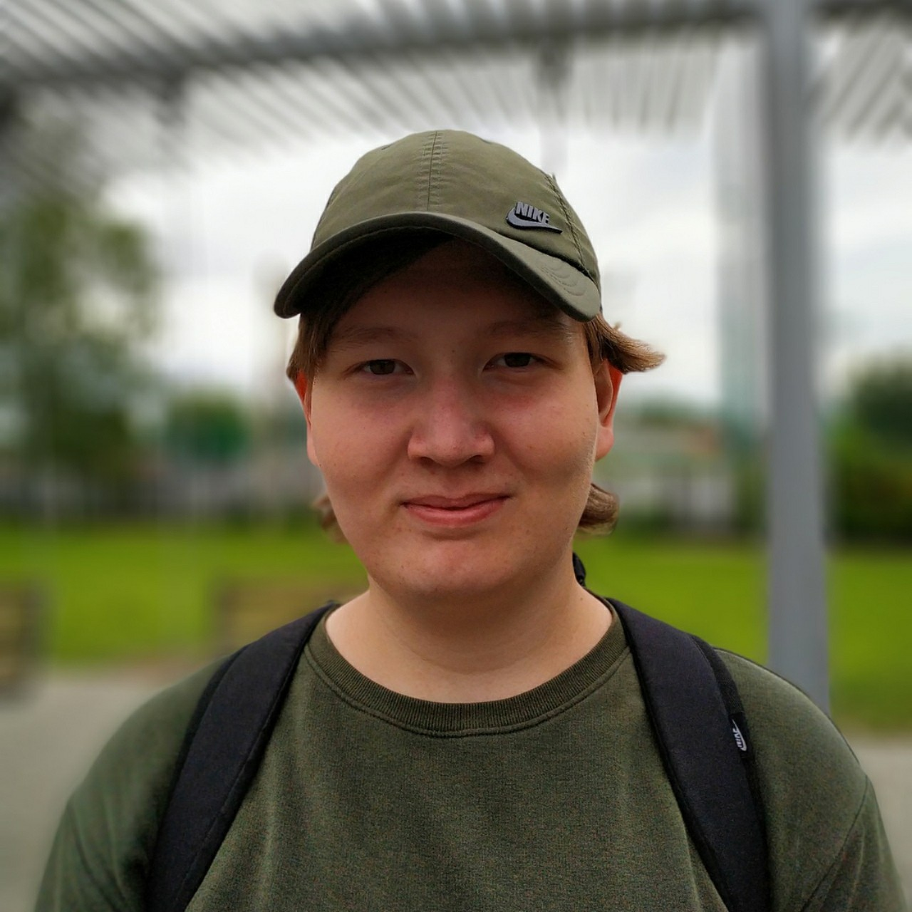
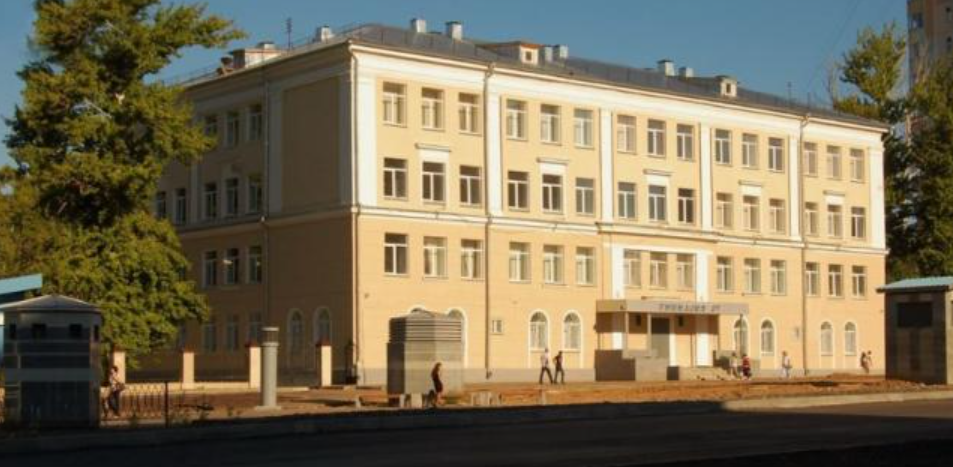
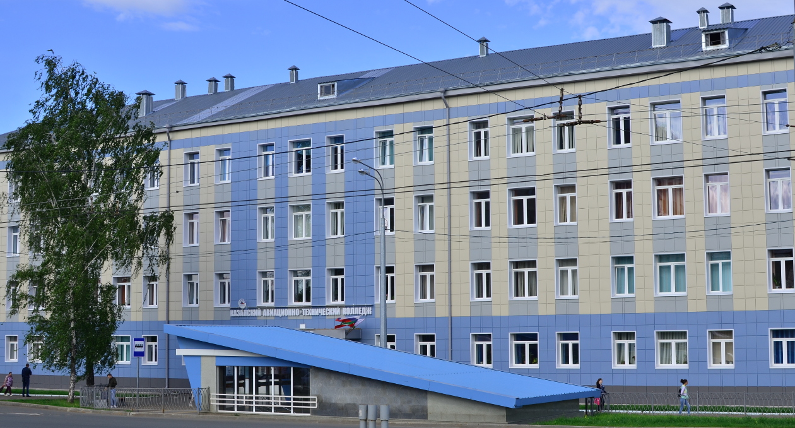
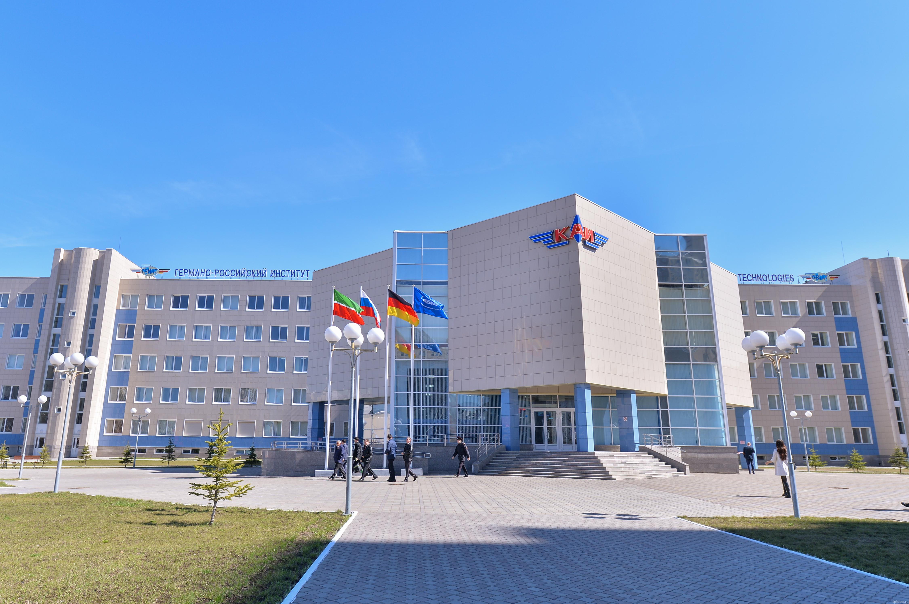
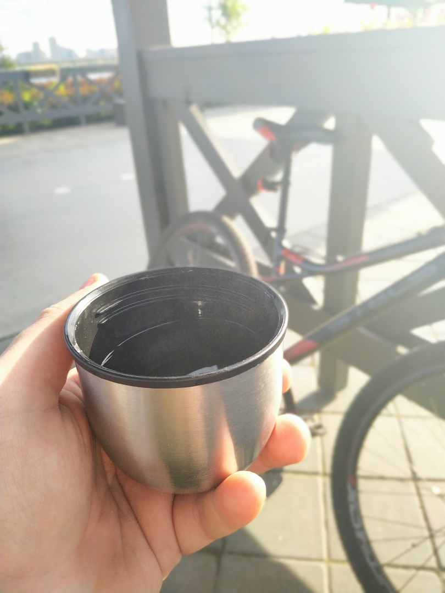
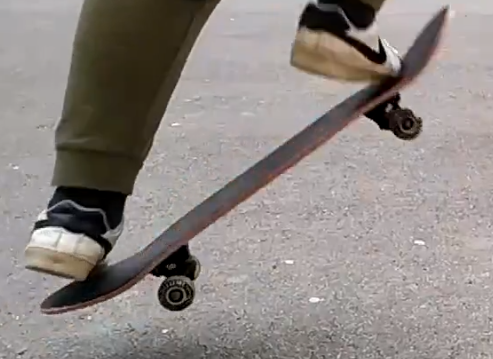

Привет!
Меня зовут Ренат.
О себе

Мне 21 год и я живу в Казани -
самом красивом городе и столице Татарстана.
Я живу со своей семьей.
Всю свою жизнь я провел тут, но моя мечта -
переехать в одну из стран Европейского союза.
Образование

Мое основное общее образование -
это законченные 9 классов в гимназии номер 37.
Первые 4 класса я учился в филиале этой гимназии,
а остальные уже в главном здании.
Моя гимназия находится по адресу улица Копылова, дом 13.
***

После сдачи основного государственного экзамена
я поступил в Казанский авиационно-технический колледж
имени Петра Васильевича Дементьева.
Одногруппники и преподаватели были очень добрыми и отзывчивыми.
Тут я отучился 4 курса по специальности "Компьютерные сети".
Мы изучали наладку, обслуживание и администрирование локальных компьютерных сетей.
Интерес к программированию, а в частности к web-разработке появился именно тут.
После защиты дипломной работы я начал искать институт с направлениями программирования.
***

После колледжа я поступил в Казанский авиационный
институт на заочное отделение специальности "Программная инженерия".
Тут я учусь на втором курсе. Среди изучаемых дисциплин такие, как:
компьютерная графика, языки и методы трансляции, функциональное
и логическое программирование, структуры а алгоритмы обработки данных.
***
Мне нравится моя будущая профессия,
однако в свободное от учебы время
я занимаюсь дополнительным самообразованием.
Изучая курсы и форумы по разработке front-end
и back-end сайтов я начал практиковаться.
Увлечения
Моим главным увлечением является образование,
но помимо этого я увлечен некоторыми видами спорта.
***

Одним из моих любимых видов спорта является - велоспорт.
Я очень люблю гулять на велосипеде по Казани,
как ранним утром так и вечером.
***

Помимо велопрогулок я также осваиваю скейтбординг -
также любимый мною теперь уже официальный вид спорта.
В Казани не очень много дорог, по которым можно
и удобно ездить на скейтборде, однако если появляется
такая возможность - я ее не упускаю. В основном я катаюсь
на набережной Казани, где не так давно открыли экстрим-парк
"Урам", иногда в парке "Крылья советов".